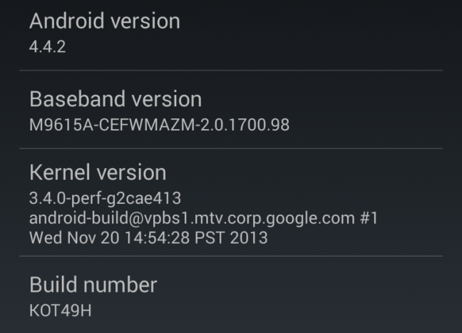

Android Software Stack:

Operating System:
In Android, the Operating System is Linux Kernel.
You can find the Linux kernel version running on your device under “About phone”
or “About tablet” in Android’s Settings.

Functions of Linux Kernel/Operating System:
- Memory Management:
Allocate a memory to a new file, Free the memory when a specific file is deleted etc.
- Power Management:
Providing power to various devices like bluetooth, camera etc
- Resource Management:
It provides resources to each process, thus providing the ability to do multiple operations at
the same time.i.e. Surfing Internet,Listening Songs etc
- Driver Management:
It handles installation of various drivers.
MiddleWare:
- Native Applications:
Just by using Java we cannot interact with native applications.
(Here native applications means that programs written in some other languages like
C,C++,Assembly
which are specific to hardware and operating system).
Thus we need the support of native libraries for interacting with such low level media
components.
- Application Framework:
The android framework is the set of API's that allow developers to quickly and easily write apps
for
android phones.
For e.g we need to guess the state of a wifi.Then rather than writing huge amounts of code for
accessing wifi we can just include a class called wifiManger which would look upon all the tasks
related to wifi.
Thus simply saying The Application Framework layer provides many higher-level services to
applications in the form of Java classes.
Application developers are allowed to make use of these services in their applications.
- Android Runtime:
It comprises of Dalvik Virtual Machine and Core Libraries.
Which we will be covering in next Section.
Applications:
Applications layer is the top most layer of Android Architecture.All applications using android framework uses android runtime and libraries.
While android runtime and native libraries are using Linux Kernel